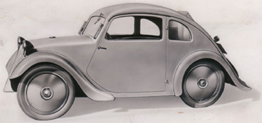
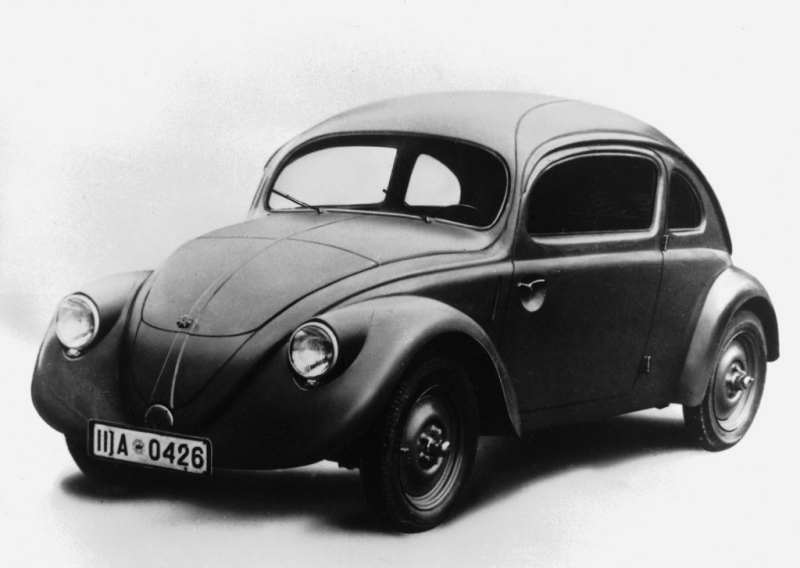

Происхождение Volkswagen
Первым серийным автомобилем компании Volkswagen можно считать легендарного Жука. И
история марки начинается
именно с этого легендарного автомобильчика. Но путь к его массовому производству затянулся на долгие
годы.
Надо сказать, до сих пор не понятно, кому же принадлежит концепция Жука. По официальной версии все
началось
в
1933 году, в берлинском отеле “Kaiserhof”. Встречу Порше назначил рейхсканцлер Германии Адольф Гитлер и
представитель «Daimler-Benz» Якоб Верлин. Целью этого совещания стала потребность жителей Германии в
народном
автомобиле. Гитлер подробно изложил свои требования: автомобиль должен быть доступным (не более 1000
рейхсмарок), экономичным (средний расход не более 8л/100км), пятиместным. Также достаточно четко были
обозначены
габаритные размеры, мощность и характеристики автомобиля.
Опыт создания заднемоторных автомобилей такого типа у Порше уже был. Первым концептом был “Porsche Typ
12
для
компании Zundapp в 1932 году, а вторым – экспериментальный автомобиль для мотоциклетной компании NSU. В
обоих
случаях дальше прототипов дело не дошло. И получив гитлеровский заказ, Порше не мог не воспользоваться
уже
готовыми наработками.
1932 Porsche Typ 12
Но идея подобного средства передвижения в то время была далеко не нова. По другой
версии
прародителем «народного автомобиля» был Йозеф Ганц – автоконструктор и главный редактор немецкого
автожурнала Motor-Kritik. В 1931 он году разработал 30 прототипов малолитражных автомобилей, в числе
которых
был Maikäfer ("Майский жук"). В 1933 году на Международной автомобильной выставке в Берлине автомобиль,
получивший название “Standard Superior”, сильно приглянулся рейхсканцлеру. Но еврейское происхождение
разработчика, мягко говоря, не соответствовало канонам немецкого строя. Вероятно, что многие решения
этого
автомобиля и легли в основу Жука Порше. Неудивительно, что в скором времени конструкторское бюро Ганца
было
подвергнуто обыску, а вся конструкторская документация была конфискована. Обстановка в стране в то время
была еще относительно гуманная, поэтому в гестапо Йозеф Ганц провел лишь несколько недель, но и этого
было
достаточно для его скорейшего побега за границу.
Сама же идея концепции этого автомобиля появилась на свет гораздо раньше – еще в середине 20-х годов. В
то
время во многих журналах публиковались эскизы “автомобиля будущего”, автором которых был никому не
известный
студент Венского технического училища - Бела Барени. Еще тогда в его рисунках четко прослеживалась
легендарная малолитражка: заднемоторная компоновка с воздушно-охлаждаемым «оппозитником», кузов
обтекаемой
формы, трубчатая рама. Барени советовали запатентовать свои чертежи, но тот не видел в этом
необходимости.
1933 Porsche Typ 32
Но есть еще один человек, чьи идеи, так или иначе могли использоваться в создании «Жука» - это конструктор Татры Ганс Ледвинка. В 1931 году Ледвинка сделал заднемоторный прототип на базе модели Т570, а через два года кузов приобрел более обтекаемые формы. Но так как Порше и Ледвинка дружили и обсуждали свои идеи друг с другом, будущий «Жук» был очень похож на более раннюю Tatra T97. К 1938 году Volkswagen посыпались жалобы на незаконное использование авторских разработок Татры. Гитлер решил эту проблему как всегда просто и сурово. В этом же году территории земель Богемии, Моравии и Силезии были объявлены протекторатом Германии, а завод “Tatra” из рук прежнего владельца впоследствии перешел в собственность Третьего рейха. Не трудно догадаться, что все претензии по авторским правам вместе с самой моделью Т97 были быстро ликвидировваны.
1933 Standart Superior
Таким образом, до сих пор непонятно, кого можно считать автором легендарного Жука. В любом случае автомобиль оказался удачным. В 1937 году появился Жук под маркировкой VW30, готовый для серийного производства. Каждый из 30 построенных прототипов должен был пройти продолжительные испытания (более 1млн. км). Так в 1938 году началось возведение заводов VW. Строительство было масштабным: вокруг заводских площадей появился город Вольфсбург, в котором и сейчас располагается головной офис компании.
1937 Volkswagen 30 Prototype
По инициативе Гитлера первый автомобиль Фольксвагена получил имя KdF-Wagen (от Kraft
durch Freude - «Сила через радость»). Автомобиль уже был готов к выпуску, но из-за начавшейся войны
мощности
направили на производство полноприводных амфибий Kübelwagen, а запуск KdF-Wagen был отложен.
После окончания Второй мировой войны заводы Volkswagen отошли Англии. Англичане «Жуком» сильно не
заинтересовались, поэтому вначале автомобили продавались только на внутреннем рынке. В 1949 году завод
Volkswagen был передан Федеративной Республике Германия и получил название
Volkswagen-Finanzierungs-Gesellschaft GmbH.
В этом же году публике был представлен первый микроавтобус марки – Bulli (бычок), в дальнейшем более
известный, как Transporter . Идею создания этого забавного фургона подкинул фольксвагеновцам голландский
импортер еще в 1947 году: Бен Пон, увидев на заводе грузовую платформу, сделанную на базе Жука,
предложил
генеральному директору Генриху Нордхофу создать серийный микроавтобус на тех же агрегатах. Так, в 1949
году
на официальной пресс-конференции был показан уже готовый образец. В следующем году с конвейера сошел
первый
серийный T1. Автомобиль получился не менее удачным, чем его прообраз Жук. Постоянно модернизируясь,
Bulli
просуществовал около 25 лет. Имея грузоподъемность в 890 кг, микроавтобус зарекомендовал себя как
отличный
коммерческий автомобиль.
Автомобили Volkswagen год за годом подтверждали звание «народного автомобиля», имея низкую цену и
проверенную годами надежность. Именно поэтому за рубежом стали активно открываться заводы этой марки. В
50-х
годах Фольксваген продавался более чем в 150 странах мира. В 1950 году ателье Karmann на основе «Жука»
(Volkswagen –1200) было поручено создать более престижный автомобиль. Дизайном занималась итальянская
компания Ghia. В июне 1955 года во Франкфурте был официально представлен Volkswagen Karmann-Ghia.
1955–74 Volkswagen Karmann Ghia Coupe
В 1961 году появился более мощный Volkswagen–1500 с 1,5-литровым двигателем и
кузовом
седан. В 1965 году после приобретением у компании “Даймлер-Бенц” фирмы Audi был создан концерн VAG
(Volkswagen-Audi).
В 1968 году появился VW–411, оснащенный двигателем воздушного охлаждения. Вскоре появился
переднеприводный
Volkswagen K–70 с двигателями объемом 1,6 и 1,8 л.
Первая половина 70-х была переломной в истории марки. в 1973 году в линейке компании появился
среднеразмерный автомобиль - Volkswagen Passat. Новинка представляла собой немного переделанную Audi 80,
представленную годом ранее. Покупателям предлагалось четыре типа кузова: 2- и 4-х дверные седаны, а
также 3-
и 5-ти дверные хэчтбеки. В 1974 году на базе Пассата вышел первый автомобиль Фольксвагена с намеком на
спортивность - Scirocco с 3-дверным кузовом.
В этом же году производство «Жука» было остановлено и перенесено в Мексику, а на смену ему пришел не
менее
легендарный автомобиль - Volkswagen Golf. Переднеприводный компактный автомобиль был очень надежным и
экономичным. Помимо этого он имел более практичный кузов хэтчбек и современные силовые агрегаты с
водяным
охлаждением. За первые 30 месяцев выпуска заводу удалось реализовать более миллиона автомобилей. Вскоре
он
стал родоначальником целого класса автомобилей, которые стали именоваться в его честь «гольф-классом». В
1983 году был запущен «второй Гольф», а в 1991 году появился Golf III. До 1996 года было выпущено около
17
миллионов автомобилей марки VW Golf различных поколений.
В 1975 году поступил в продажу уменьшенная копия Гольфа–Volkswagen Polo. 3-дверный переднеприводный
хэтчбек
был построен на базе Audi-50.
1975–79 Volkswagen Polo (Typ 86)
В 1980 году на базе гольфа стал выпускаться 4-дверный седан – Volkswagen Jetta.
Следующая модель вышла в 1984, а третье поколение – в 1992 году, но уже под именем Vento. Модели
конструктивно практически полностью повторяли Volkswagen Golf.
В 1988 стал выпускаться Volkswagen Corrado – идеологический приемник VW Scirocco. Автомобиль задумывали
как
компактный и недорогой, стараясь придерживаться идеи "народного автомобиля". Не менее важным было
добиться
того, чего так не хватало автомобилям Volkswagen – индивидуальности и спортивности. С 1,8-литровым
16-клапанным турбированным двигателем (160 л.с.) Corrado стал самым мощным и быстрым автомобилем в
модельном
ряду VW.
С 1991 года Фольксваген начинает работу по приобретению других марок. Вскоре в концерн "Фольксваген
Груп"
вошли такие марки, как Audi, Seat и Skoda. С приходом Фердинанда Пиеха на должность Председателя
Правления и
Совета Директоров прорабатывается стратегия, направленная на более рациональное использование
производства,
сохраняя при этом высокое качество автомобилей. По большому счету, этого удалось достичь благодаря
применению общих технологий, агрегатов и шасси при создании новых моделей разных марок.
В 1994 году выходит третье поколение Polo, который выпускался с кузовами хэтчбек, седан и универсал.
Модель
оснащалась бензиновыми и дизельными двигателями рабочим объемом 1.0-1.9 л и мощностью 50-101 л.с. В
следующем году свет увидел 5-ти и 7-местный универсал Sharan.
1995–2000 Volkswagen Sharan
Производство 5-ого VW Passat началось в 1996 году. За счет унификации с моделями
Audi А4
и Audi А6 на Пассаты стали устанавливать более мощные силовые агрегаты Audi продольного расположения. В
следующем году вышел Golf IV, набравший в первые дни после премьеры более 60 тысяч заказов.
В 1998 году в серию были запущены малолитражка Lupo, седан Bora, пришедший на замену VW Vento, а также
возрожденный «Жук» - VW New Beetle. Этот год также ознаменовался приобретением престижных марок
премиум-сегмента - "Bugatti", "Lamborghini" и "Bentley".
Следующие годы были сплошь юбилейными для компании Volkswagen: в 1999 году исполнилось 25 лет с начала
запуска VW Golf, 50 лет микроавтобусам Transporter. А в 2000 году 25-летие отметила модель Polo.